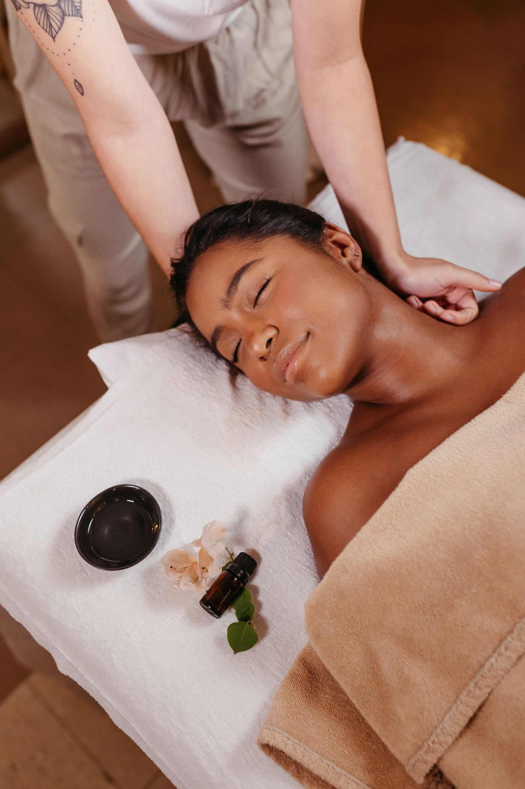
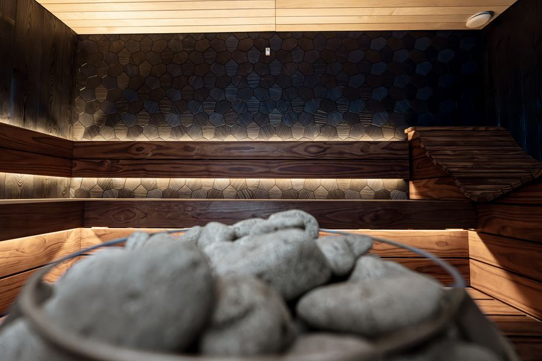

Russian Deep Tissue Therapy
Firm, sustained pressure with friction and percussion for muscle that has stopped letting go.
18–22 min from Cyber City
A straight run up NH-48 from the Gurgaon corporate belt to a genuine banya and a deep tissue table — still open long after the Gurgaon working day has finished.

Straight answer first
Gurgaon is not short of spas. If what you want is a competent hour-long massage, book one near your office and save yourself the highway.
The reason people make the trip anyway is the banya, and the banya is genuinely hard to find on this side of Delhi. It is not a steam cabinet with a Russian name on the door. It is a room built to hold moist heat at roughly 70–90°C, a cold plunge placed a few steps from that room, and a therapist working over you with a soaked bundle of birch during the heat phase. The three parts only work together, which is why they are rare separately and rarer combined.
The second reason is the clock. Gurgaon's working day routinely ends after most spas have shut their doors, and a treatment you cannot actually get to is not a treatment. We are open twenty-four hours, every day of the year.
Getting here
NH-48 towards Delhi, leaving at the Mahipalpur exit. Times are for ordinary conditions.
On timing. The NH-48 stretch is the variable. Late evening it runs quickly, which is part of why the after-work slot suits this trip better than the rush-hour one.

The pattern is consistent enough to be predictable. Long hours seated pull the shoulders forward and load the neck and upper back. The lower back takes the rest. Hip flexors shorten from sitting, then complain the moment you train. A long commute on top adds another hour in the same position.
Deep tissue therapy addresses that directly, with firm sustained pressure worked through the specific muscles that have stopped releasing. If you also train, the sports and recovery session shifts the weight of the hour towards legs and hips. And when the problem is not one area but a whole compressed week, the banya is the better answer — heat and contrast loosen everything at once rather than negotiating with it muscle by muscle.
Best for this trip
Firm, sustained pressure with friction and percussion for muscle that has stopped letting go.

Recovery-focused deep work for training loads, long flights and heavy weeks.

Moist heat, birch venik work and a cold plunge, in the classic Eastern European sequence.

If you are driving twenty minutes each way, it is worth planning the visit rather than squeezing it. Two suggestions from guests who do this regularly.
If you expect to come regularly, ask about the monthly plans when you call — they work out cheaper than paying per session from the second visit onwards.
Questions
Eighteen to twenty-two minutes via NH-48 towards Delhi, leaving the highway at the Mahipalpur exit, under ordinary traffic conditions. From Golf Course Road and Sector 54 it is nearer twenty-five to thirty minutes, and from Sohna Road and Sectors 47–49 around thirty to thirty-five.
Typically ₹250–400 one way from most Gurgaon locations. The alternative is the Rapid Metro across to the Yellow Line, out to Aerocity, then about five minutes by auto from Aerocity Metro Station.
Yes, and this is a large part of why our hours are what they are. We are open twenty-four hours a day, every day of the year. A session after a late finish is one of the most common bookings we take from Gurgaon.
Desk work concentrates tension in the neck, shoulders and lower back, and shortens the hip flexors. Deep tissue therapy targets those areas directly. If you also train, the sports and recovery massage weights the session towards legs and hips as well. If your whole week has been heavy rather than one specific area, the banya loosens everything at once.
For a standard massage, probably not — Gurgaon has plenty of good options closer to you, and we would rather say so than pretend otherwise. The reason people make the trip is the banya, which needs a purpose-built heat room, an adjacent cold plunge and venik work. If that is what you are after, the drive is the cost of getting it.
Book your session
Call on the way out and the room will be ready when you arrive. Late sessions are the norm here, not a favour.